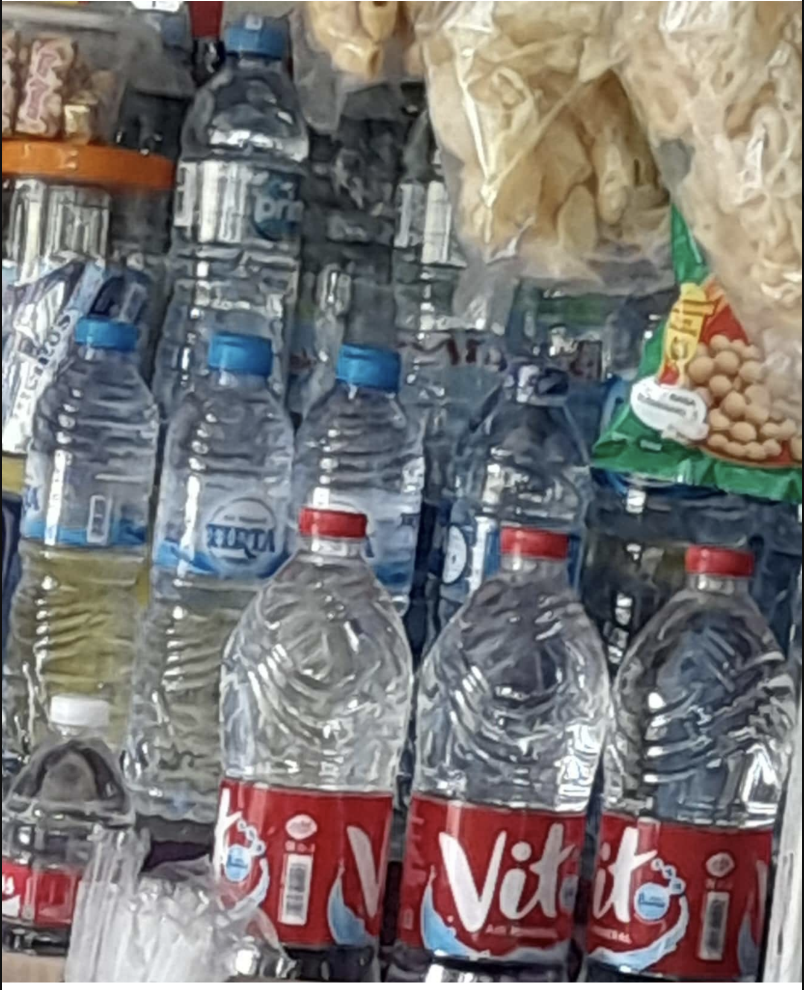
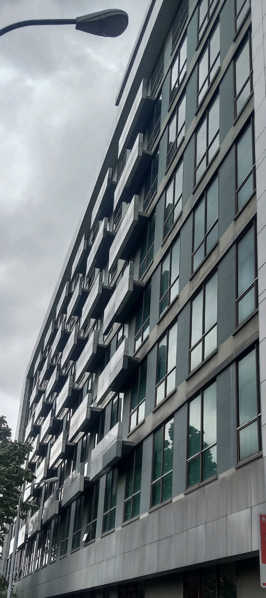
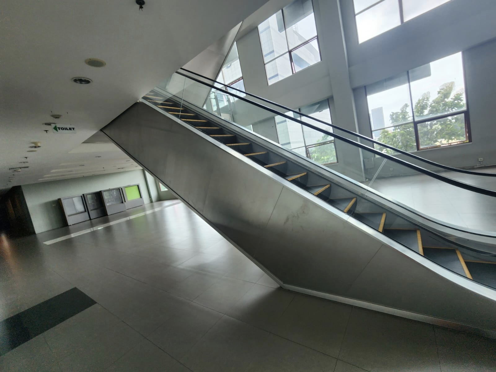
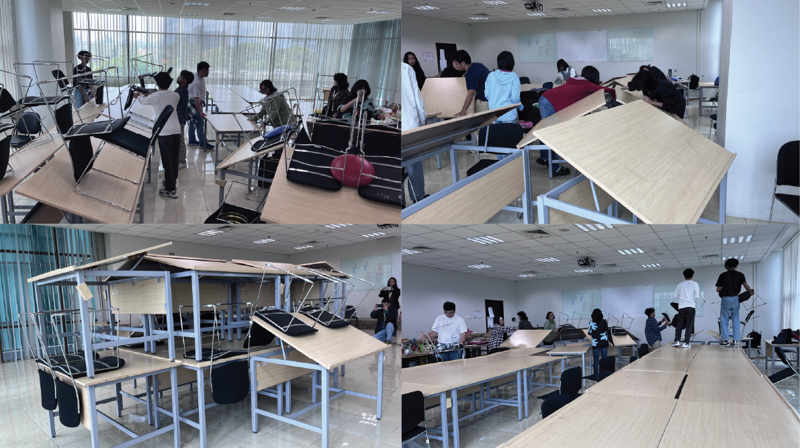
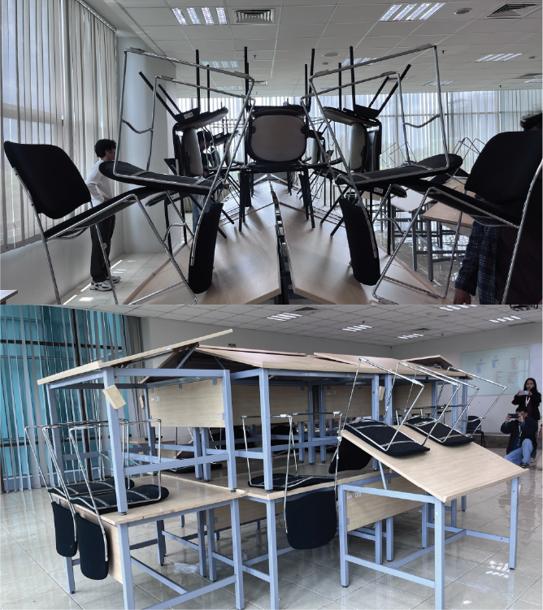
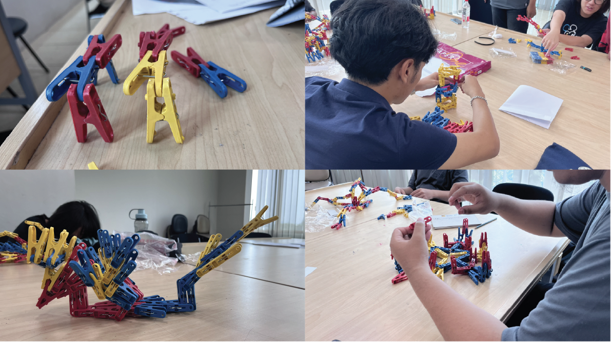
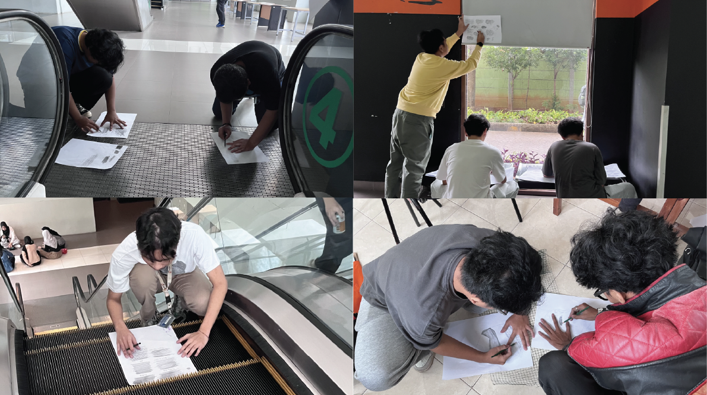
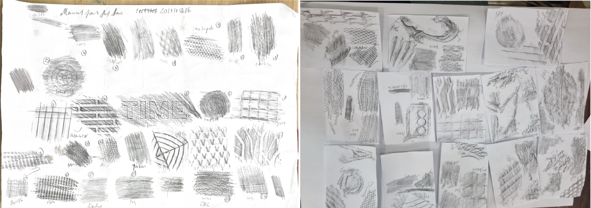
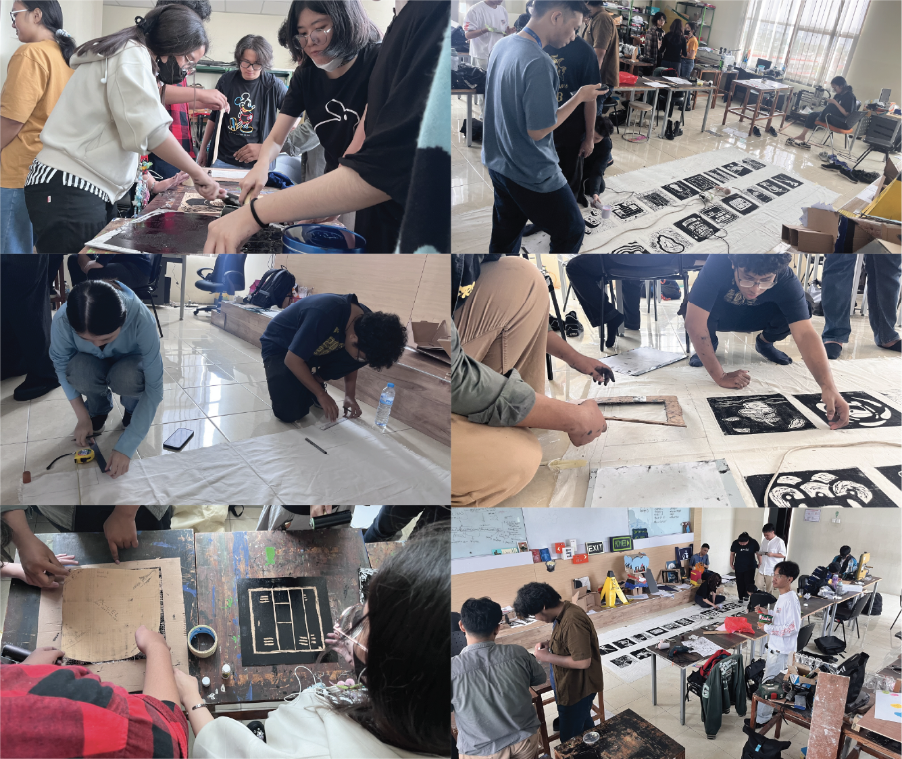
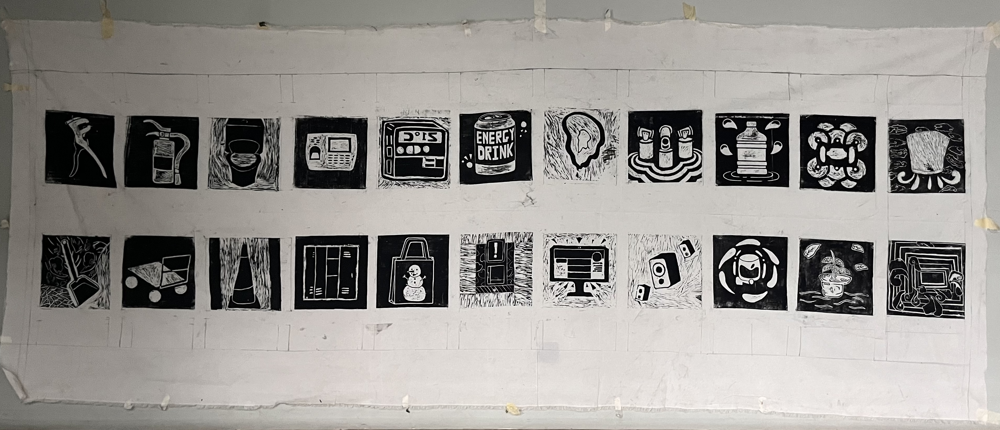

Abstract
This article explores the transformation of classroom spaces within the Visual Communication Design programme through interventions based on everyday objects. Stemming from concerns regarding design education that tends to be instructional and alienated from reality, this pedagogical practice adapts personal artistic practices into Three-Dimensional Design Principles and Printmaking courses. Using the philosophical lens of Ki Hadjar Dewantara’s 'nurturing natural inclinations' (menuntun kodrat) and Paulo Freire’s concept of 'problem-posing education,' this article examines how banal objects in the campus environment can be repurposed as learning instruments that ignite critical consciousness. Through methods encompassing Three-Dimensional Design Principles reading, tactile exploration, spatial experimentation, and narrative investigation, students are encouraged to shift from being mere task performers to becoming active subjects of research. The findings indicate that the integration of everyday realities is capable of building student intellectual sovereignty, while simultaneously transforming the classroom into an emancipatory pedagogical laboratory. This article concludes that the fusion of physical action in navigating space and critical reflection on everyday objects constitutes a liberating praxis relevant to socially conscious design education.
Keywords
Introduction
My artistic practice is rooted in the exploration of everyday objects as materiality that harbours sociopolitical weight. One such object I have deeply engaged with is the horn speaker, an auditory infrastructure present massively across the Indonesian landscape, particularly in mosques. To me, this object is not merely a sound transmission tool; it is a symbol of power that negotiates space and identity claims in the public sphere. Through observations of various social turbulences triggered by interactions with this object—ranging from the residual conflicts in Tolikara to the criminalisation of criticisms regarding noise pollution—I have transposed these experiences into artworks. Thus, my practice constitutes an attempt to 'read' everyday objects not as static entities, but as artefacts that demand critical reflection on the relations of power and tolerance within society.
Building upon this foundation, I have implemented a similar approach in the classroom within the Visual Communication Design programme at Kalbis University. I facilitate students in reading their environment, ranging from campus infrastructure to everyday phenomena in domestic spaces. In this process, these objects and everyday phenomena are not merely observed but transformed into primary sources and objects of learning. In these classes, I do not position students as passive recipients of instructions, but as active subjects of research. This process aims to spark sensitivity toward the surrounding reality—a quality that, for me, is not merely a requisite for becoming a competent designer, but an absolute prerequisite for becoming a 'free human being' (manusia merdeka) equipped with critical faculties, empathy, and deep social consciousness.
I implemented a series of spatial and visual interventions across several courses within the Visual Communication Design programme. In the Visual Reproduction Technology (Printmaking) course, students explored surface textures within the campus environment through rubbing techniques and reconstructed everyday objects—ranging from personal and appealing items to those perceived as disruptive—into stylised designs for a collective print project. In the 3D Design Principles (Nirmana) class, I shifted the focus from abstract theory to the examination of design principles within the studio landscape, involving the deconstruction of the materiality of tables and chairs, as well as the manipulation of banal objects, such as clothespins, to create spatial works. Through these interventions, this article examines how the everyday campus space is transformed into a pedagogical laboratory that sparks students' critical consciousness regarding their world—a practice that reflects strong resonance with Ki Hadjar Dewantara’s philosophy on the environmental relevance of education and Paulo Freire’s concept of "problem-posing education."
This article does not stem from a rigid theoretical application; rather, it serves as a reflective endeavour to interpret ongoing pedagogical practices. Through the philosophical lenses of Ki Hadjar Dewantara regarding contextual education and Paulo Freire’s "problem-posing education," this paper dissects how the spatial interventions implemented in the Nirmana and Printmaking courses transform everyday spaces into emancipatory pedagogical laboratories.
Pedagogical Lens: A Theoretical Reading
My efforts in transforming the classroom are aligned with the educational principles of Ki Hadjar Dewantara. As the father of Indonesian education, Dewantara emphasised that ideal education must be able to shape individuals who are independent in feeling, thinking, and acting—an independence that can only be achieved if the knowledge learned is relevant to the contextual needs of the students' environment (Dewantara, 2013). Through the Among system, students are encouraged to actively seek beneficial knowledge, fostering the development of reason and self-reliance (Marihandono, 2017). Furthermore, Dewantara asserted that education must develop the cipta (cognitive), rasa (affective), and karsa (conative) in a balanced manner, in order to humanise individuals as cultural beings, rather than merely producing a workforce oriented toward industrial needs (Latif, 2020).
This concept is further strengthened by Paulo Freire’s notion of "problem-posing education." For Freire, education is a reflection of the intentionality of consciousness—a process in which humans are not only aware of objects outside themselves but also turn to reflect on their own existence. By applying this educational model, I strive to bring students closer to their presence in the world, where their surrounding environment is no longer viewed as an estranged, separate object, but as a reality that engages in dialogue with them. Ultimately, this fosters a more critical understanding while liberating students from alienation toward their own living space (Freire, 2018).
In this pedagogical approach, objects and everyday phenomena on campus are no longer treated as passive objects of observation but are transformed into primary sources and subjects of learning. Through this process, students are encouraged to read the surrounding reality with critical consciousness, ensuring that the position of these objects and phenomena is no longer external, but present within the students' subjective experiences. These objects are grasped, understood, and internalised into new knowledge that is then critically examined. Thus, the learning process is no longer unidirectional; it becomes a continuous dialogue in which everyday reality becomes a space where knowledge is produced and its sensitivity is tested.
Studies on critical pedagogy within design education have evolved significantly through diverse mediation instruments. Mazzarotto and Serpa (2022) explored the use of dialogic reflection cards to foster students' critical consciousness. This approach is complemented by Skelton (2024), who proposed a counter-critical pedagogy manifesto to challenge the hegemony of formal curricula, and Seed (2025), who designed a self-reflection-based instructional framework for first-year students. Meanwhile, Spencer, Carrion-Weiss and Simmons (2024) enriched this discourse by introducing a place-based pedagogy that utilises everyday objects to contextualize design injustices.
However, a significant theoretical gap exists within the current literature. In contrast to Mazzarotto and Serpa (2022), who focused on reflection cards as cognitive-discursive mediation materials, this study proposes physical intervention through "space-hijacking" as a tactile-spatial mediation tool. While previous studies tended to bifurcate instructional design development and artistic studio practices, this article integrates both organically. Furthermore, while Spencer et al. (2024) emphasised system exploration through objects within the studio environment, this article expands on this by positioning the tension between "standardized formal curricula" and "freedom of material experimentation" as the core of emancipatory praxis itself. Consequently, this study does not merely replicate existing critical learning models but provides an operational framework for how pedagogical subversion can be enacted within compulsory classrooms bound by rigid institutional evaluation systems.
Pedagogical Method: Exploring Everyday Objects in the Classroom
This methodology was developed through a Practitioner Inquiry approach, in which the researcher's artistic practice is transformed into pedagogical intervention. This intervention was applied to the 2024 cohort through a series of foundational courses, positioning everyday reality as the central idea of the learning process. The use of everyday objects in this pedagogical method is not designed in a linear, sequential manner; rather, it is integrated across various courses at different levels. The core idea is to foster independent critical thinking in students.
Reading the Everyday
The process begins in the Three-Dimensional Design Principles course, designed through a series of spatial interventions that place everyday reality at the centre of learning. It commences with "Reading the Everyday as Nirmana." Students are encouraged to map visual elements in their surrounding environment—from the arrangement of bottles in a local kiosk to the architectural patterns of the campus. Students learn to abstract visual phenomena, previously considered banal, into design principles, transforming everyday objects from passive entities into authentic sources of design knowledge.
Tactile Exploration (Rubbing)
Exploratory depth is further enhanced through texture rubbing techniques. By adapting my own childhood memories as a gateway, students are encouraged to 'lift' the material traces of surface textures—such as floors, walls, and organic materials—onto paper. This stage aims to spark the students' sensory sensitivity, which has tended to be reduced by the dominance of digital screens, forcing them to engage in a physical encounter with the material reality surrounding the campus.
"Hijacking" Experiments
Once visual and tactile sensitivity is established, the method proceeds to constructive experimentation through the practice of "Hijacking the Classroom" and the manipulation of objects such as clothespins. Students are challenged to transform studio furniture and trivial objects into artistic spatial compositions intuitively. In this process, they do not merely assemble; they learn to understand the logic of construction, the laws of gravity, and points of equilibrium empirically through a process of trial and error.
Narrative Investigation
In the Visual Reproduction Technology (Printmaking) course, students select five everyday objects to be processed through stylisation techniques. This is not merely an exercise in form simplification, but a stage of critical reading wherein students dissect the narratives, functions, or personal anxieties contained within their chosen objects. This stage confirms the students' position not as mere task executors, but as active subjects of research in interpreting their own living space.
Results and Discussion
Everyday Objects as Mediators of Knowledge and Consciousness
In the Three-Dimensional Nirmana and Tactile Exploration (texture rubbing) classes, everyday objects surrounding students are re-read and transformed into primary sources and learning objects. This practice demonstrates that everyday reality is capable of providing profound knowledge when students position themselves as active subjects rather than mere passive objects of instruction. This approach serves as a tangible embodiment of the concept of the intentionality of consciousness proposed by Paulo Freire. Through this method, the learning process is inverted: students are not only aware of design principles as abstract objects external to themselves, but this awareness compels them in turn to reflect upon the presence of physical materiality within their own lived spaces.
The transformation from a conventional classroom to the intentionality of consciousness is vividly captured in the shift of students' visual perception during texture rubbing. As reflected by Devina, this object-seeking method sparked a renewed spatial sensitivity: "Honestly, it was very exciting to hunt for objects around the school to use as textures; turns out that when we focus on searching, there are so many textures around us that we previously overlooked." A similar realisation was expressed by Athaya, who noted that "surfaces previously deemed invisible actually possess unique textures."
These verbal accounts from the students serve as crucial theoretical evidence: the surrounding environment is no longer viewed as a detached or transparent foreign object, but rather as a reality in active dialogue with them. The material world of the campus transforms into a space where knowledge is empirically produced. This world-mediated dialogue manifests concretely in the students' visual findings in the field.


Marlo's observation of the bottle arrangement at a local stall (Figure 1), which reveals the principle of balance; Andrea's observation (Figure 2), which dissects the organic patterns of a tree through the principles of line nirmana; and Dewangga's capture (Figure 3) of the window repetitions on the campus facade, collectively demonstrate how banal objects demand critical reflection upon their lived spaces.

Through the lens of Ki Hadjar Dewantara, this process of discovering knowledge from the physical reality inhabited by students represents a form of education relevant to the contextual needs of students' environments. When Nicholas Boaz Satria reflected on his experience that "while drawing, it feels like the pencil or other drawing tools move up and down, forming textures on the object's surface," a balanced engagement occurs among Cipta (cognitive form analysis), Rasa (tactile sensory sensitivity), and Karsa (physical action in exploring space). Concrete evidence of the operation of this intentionality of consciousness is evident in Anthony's written analysis of the campus escalator's architectural elements (Figure 4). Rather than passively treating the escalator as a mere functional transportation tool, Anthony's consciousness actively turned back toward the object to dissect the Three-Dimensional Nirmana elements within it. By identifying the escalator as a "spatial experience" involving dimensions of time and human interaction, Anthony demonstrates that students no longer view the world as a static reality. The campus infrastructure transforms from a mere silent background into a dynamic space that influences its users. The students' success in performing this visual abstraction constitutes a tangible manifestation of learning autonomy.
Material Experimentation as Pedagogical Praxis
The learning process in the Three-Dimensional Design Principles course proves that an understanding of design principles does not have to stem from rigid theoretical instructions. This is evidenced when students are challenged to "hijack" classroom furniture—such as tables and chairs—and experiment with highly banal objects: clothespins. Through the provision of 400 clothespins without rigid formal instructions, students are encouraged to engage in a process of 'tinkering' (utak-atik)—a method adopted from the collective practices at GudRnD, where patterns of material, form, and technique are discovered organically through play. In this intuitive process of "playing," students consciously apply Wucius Wong’s design principles (Wong, 1977). They respond to the laws of gravity, equilibrium, and manipulate negative space and direction to build precise structural frameworks, as documented in their symmetrical and asymmetrical compositional results.


However, this emancipatory laboratory does not function automatically or instantaneously. In the initial phase, the removal of prescriptive instructions actually triggered resistance and emotional confusion among students who were accustomed to being spoon-fed by the banking education model. When the lecturer's authority was withdrawn and replaced by absolute freedom, students experienced tactical disorientation. This is captured in the post-class reflection of one of the students:
"Honestly, at first, I was confused and somewhat annoyed because the lecturer didn't provide any shape examples or instructions on what to make at all. We were left to tinker on our own. But once we started arranging the tables and clothespins, we realized that the real challenge was figuring out how to make these trivial objects stand upright without glue."
Students' persistence in recognising material characteristics—whether when arranging furniture or exploring the clamping force of clothespins—becomes a crucial moment in this method. They do not merely assemble; rather, they recognize how each component can be constructed into unexpected forms, ranging from figurative transformations to architectural modular system explorations. The ambiguous side and material failures become an inseparable part of this learning process. When their furniture or clothespin structures collapsed halfway through, students were forced to confront physical frustration. It is this tactile negotiation process between students and objects that transforms the studio into a laboratory where they learn to understand real-world construction without the fear of making mistakes.
"When my clothespin structure collapsed for the third time because it was unbalanced, I felt like giving up. But from that failure, I was forced to re-examine the modular arrangement, change the direction of the clips, and calculate the load logically. That was when I finally grasped firsthand what the principle of asymmetrical balance truly is."
When their structures collapsed, the students did not immediately surrender; they repeatedly iterated and reflected upon failure as an empirical lesson.

The students' success in navigating frustration and producing complex compositions serves as empirical evidence of the concept of menuntun (guiding) within Ki Hadjar Dewantara's Sistem Among (Among System). Education, according to KHD, is tasked with guiding natural potentials (kekuatan kodrat) so that individuals achieve independence. By allowing students to grapple with banal materials and structural failures without repressive lecturer intervention, this process provides space for their "innate nature" and reasoning faculties to develop sovereignly. Students achieve true learning independence because tactical decisions are made based on their own powers of observation and logical analysis, rather than out of compliance with the dictates of lecturer authority.
Furthermore, this practice is a tangible embodiment of Paulo Freire's praxis, which represents the inseparable unity between human action and reflection upon their world. Banal objects such as tables, chairs, and clothespins act as mediators that challenge students and educators to dialogue and grow together, transforming the classroom into an emancipatory pedagogical laboratory.
Substantial tension inevitably arises when the terms "liberation" and "intellectual sovereignty" are tested within the structure of compulsory studio courses that remain conventionally tied to grading and institutional evaluation. Herein lies the paradox: liberation does not occur by destroying the institution, but by creating a "spatial anomaly space" within the studio. The final grade no longer functions as a tool of judgement over a final product that is "correct according to the lecturer's taste"; rather, it transforms into a form of validation for the depth of the students' praxis process—the extent to which they dare to experiment, reflect upon material failure, and reclaim their own agency of thought amidst structural limitations.
Critical Consciousness of the Campus Living Space
The educational process is frequently trapped in cold visual abstractions, where objects are viewed as entities separate from the subjects observing them. To break this alienation, I adapted the texture rubbing technique as a pedagogical gateway to compel students to engage in a direct "physical encounter" with their campus environment. This rubbing action is not merely an artistic activity, but rather a form of unveiling the reality of space that has long remained transparent in everyday life.

However, this unveiling demands a difficult physical struggle that frequently fails to align with ideal studio plans. As reflected by Steven, the process was
"quite difficult, you have to play with positioning and also experiment with matching textures."
This friction with material reality becomes even more apparent when students step out of the comfort of the classroom and negotiate with uncontrollable environmental elements. Valencia noted how "when I was rubbing, my paper almost blew away in the wind," a situation echoed by Nabila, who had to hunt for textures all the way to the campus parking lot:
"Grab whatever has a visible texture, go outside the Kalbis [building] to get the texture of a motorcycle seat, paper crumpled by the wind."
This sensory intimacy born from field engagement subsequently serves as the epistemological foundation when students determine their objects for the subsequent printmaking project. Their choice of objects is no longer merely the result of surface aesthetic considerations, but rather the fruit of a mature dialectical relation between the subject and space. When a student critically selects an escalator that is "never turned on even though it is used every day" or questions a hand dryer that "makes a loud noise," they are practising Paulo Freire's "problem-posing education." These objects cease to be inanimate things; they transform into "codes" of reality that uncover anomalies, malfunctions, and discomforts within the campus public space. In this process, students no longer position themselves as passive observers, but rather as subjects capable of perceiving the world as a reality that is continuously in process, challenging, and demanding transformation.

Their independence in abstracting forms—such as viewing a grinder as a "vinyl record" or a soap dish as a visual object—marks the birth of intellectual sovereignty. The most empirical evidence of the emergence of Ki Hadjar Dewantara's concept of the Manusia Merdeka (Independent Human) is vividly captured in Yeira's reflection. When faced with independent exploration, Yeira made a leap in artistic decision-making free from the lecturer's dictates:
"In the process, I wanted to draw a sheep's head, but I thought it wasn't quite suitable, so I finally decided to draw my own character. Then, for some of the textures, I matched them with what the character would likely have or experience."
Yeira's reflection demonstrates the sovereign operation of the aspects of Cipta (cognitive analysis), Rasa (sensory sensitivity), and Karsa (volition/action). Students no longer wait for the lecturer's approval on what is deemed worthy of being artwork; they dare to assume full authority in ascribing meaning to banal objects based on their personal narratives and anxieties. They independently bring their lived realities and subjective experiences into the classroom.
Consequently, the integration between the physical action of traversing space (action) and critical reflection on the function of objects (reflection) is not merely a design method, but rather a praxis of liberation. Everyday objects on campus now function as active instruments that provoke consciousness. The classroom has mutated into an emancipatory pedagogical laboratory, a place where physical "tactile exploration" transforms into critical "reading." Ultimately, every banal object surrounding them bears witness to the birth process of designers who are not only technically skilled but also possess a critical consciousness rooted in their lived spaces.
Weighing the Limits of Emancipation in the Curriculum
The most challenging substantial tension in this practice—as is frequently the case with critical pedagogy experiments in higher education—is how the terms "liberation" and "intellectual sovereignty" are tested within the structural boundaries and biases of compulsory studio courses that conventionally remain tied to formal institutional grading. How can a classroom subject to a formal curriculum and campus bureaucracy legitimately claim to be an emancipatory laboratory?
This learning project attempts to resolve this paradox not through a uniform blueprint, but rather through a series of adaptive and distinct tactical manoeuvres tailored to the characteristics of each course.
In the Three-Dimensional Nirmana course, emancipatory interventions focus on the subversion of process and instruction as a manifestation of Ki Hadjar Dewantara's Sistem Among (Among System) philosophy. Instructors withdraw from the authoritarian role of dictating final outcomes—a paradigm shift from Paulo Freire’s banking education to problem-posing education—replacing it with the freedom of material experimentation. The formal curriculum concerning design principles is not eliminated, but rather "tactically navigated" from within to provide space for students to autonomously navigate structural failures. In the context of KHD, this action represents a concrete effort to menuntun kodrat (guide innate potential) of students so that they become sovereign over their own reason and volition, rather than remaining passive objects of instruction. Here, emancipation manifests as freedom in action and thought; material failures experienced by students are not viewed as technical shortcomings, but rather as a "problem" demanding critical reflection and corrective action—a praxis of liberation that enables students to achieve intellectual independence without the fear of aesthetic judgement.
Meanwhile, the latent challenge concerning the lecturer's monopoly of power over grades is addressed in the Graphic Reproduction Technology (Printmaking) course. Within this relief printing studio, the instructor decentralises grading authority through a dialogic self-grading mechanism. The Final Examination no longer concludes with unilateral judgement from the instructor's ivory tower; instead, it is transformed into a reflective space where students determine their own grades based on rational practical accountability.
Post-class empirical data demonstrates that when grading authority is returned to students, they do not exploit it for egotistical satisfaction; rather, they use it as a mirror for critical reflection on their limitations and hard work. The strongest evidence of the operation of this intellectual and sensory independence (Cipta and Rasa) is captured in the students' arguments regarding grade transparency. Diandra, for instance, astutely rejects the claim to an absolute perfect score and offers an objective grade range regarding her learning process:
"The highest is 95, and the lowest is 85. I'm still learning myself, and this is my first time being exposed to this material. I'm aware I still have faults and errors... So therefore, for my efforts and willingness, I think 85 for the lowest and 95 for the highest makes sense to me."
A similar critical consciousness was also demonstrated by Nicholas, who boldly self-critiqued the technical flaws of his own production when proposing a grade of 90: "The group contribution is fulfilled, the print design is not perfect, but not too messy either... This is because during carving, I was impatient and wanted to finish quickly. The lino material used was also hard, which made the process slightly more difficult."
Even students such as Naftali (requesting a grade of 85) and Aryo (requesting a grade of 85) openly acknowledged that they had not fully mastered relief printing techniques, yet they still valued their tactical engagement within the group's collective workflow. On the other hand, students requesting higher grades, such as Darren (requesting a grade of 90), based their arguments not on the visual aesthetics of the product, but rather on their communicative agency within teamwork: "...I also feel that my contribution in speaking up and steering this project back on track was one of the factors that enabled this collective work to succeed on time."


The distinct dynamics across these two courses conclusively demonstrate that the framing of "emancipation" in this research is by no means naive. Instructors do not pretend to dismantle formal institutions; rather, they leverage existing bureaucratic loopholes—whether through relaxed instructions in the Nirmana class or through the democratisation of assessment in the Printmaking class—to guide the innate potential (kekuatan kodrat) of students so that they grow into subjects sovereign over their own reason and self-evaluation.
Conclusion
This article demonstrates that transforming the classroom into a pedagogical laboratory does not require the radical dismantling of institutions, but rather operates through a series of tactical manoeuvres that position everyday reality as the primary mediator of knowledge. By integrating personal artistic practices into the design studio, students have transformed from mere instruction recipients into active research subjects who interpret the reality of their lived spaces. This practice proves that the educational vision oriented toward menuntun kodrat (guiding innate potential) à la Ki Hadjar Dewantara, alongside Paulo Freire’s (2018) problem-posing education model, can be applied organically—even amid the constraints of standardised curricula, provided that the learning outcomes of the course remain attainable through this pedagogical practice. Based on the preceding discussion, the application of everyday object-based pedagogical methods in this Visual Communication Design study programme has proven capable of transforming banal objects into both sources and authentic objects of study. Students have shifted from merely receiving instructions to becoming active research subjects in interpreting their campus environment. Through a series of spatial interventions, they are not only able to empirically internalize three-dimensional design principles, but have also successfully established a sensory dialogue through physical encounters with the material reality surrounding them.
Furthermore, this study demonstrates that emancipation in design education is not a linear process free from obstacles. The ambiguity arising from students' resistance to non-prescriptive methods, alongside the tension experienced when navigating formal assessments, serves precisely as an essential moment of critical reflection. Aligned with the findings of Mazzarotto and Serpa (2022) concerning the politicization of design education and Spencer et al. (2024) regarding place-based pedagogy, this article reaffirms that banal materiality—such as tables, chairs, and everyday objects—acts as an active instrument that provokes critical consciousness. While Skelton (2024) emphasises the importance of a counter-critical pedagogy that unifies formal education with lifelong learning, this study has operationalised it through the democratisation of authority in assessment (dialogic self-grading).
The synthesis of this pedagogical process affirms that students' intellectual sovereignty—as an embodiment of Ki Hadjar Dewantara's (2013) Manusia Merdeka (Independent Human)—can be attained when educators successfully bridge the dichotomy between emancipatory theory and tactical studio practice (Seed, 2025). Ultimately, the integration between the physical action of traversing space (action) and critical reflection on banal objects (reflection) constitutes a relevant praxis of liberation for design education. This method is not merely a transformation of teaching techniques, but rather a pedagogical laboratory that humanises individuals as subjects sovereign over their own reason (nalar), sensory sensitivity (rasa), and volition (karsa), while remaining firmly rooted in their own lived spaces.
| Method Stage | Student Activity | Pedagogical Manifestation (KHD) | Emancipatory Praxis (Freire) | Final Outcome |
|---|---|---|---|---|
| Reading the Everyday | Mapping visual anomalies and abstracting everyday surroundings into 3D design principles. | Nurturing Natural Dispositions (Menuntun Kodrat): Contextual learning rooted in the immediate living environment. | World-Mediated Dialogue: De-alienation of space by transforming objects into dialogue partners. | Perceptual De-alienation: Everyday objects as authentic knowledge mediators. |
| Tactile Exploration (Rubbing) | Physical mapping of surface textures across campus infrastructure. | Integration of Cipta & Rasa: Awakening bodily/sensory awareness through material encounters. | Conscientization (Conscientização): Unveiling hidden material realities beyond digital screens. | Embodied Spatial Sensitivity: Tangible grounding of design perception. |
| "Hijacking" Experiments | Spontaneous construction using furniture and clothespins via trial and error. | Autonomous Growth (Sistem Among): Learning structural logic and gravity without prescriptive diktats. | Praxis: Dialectical unity of physical action and critical reflection upon structural collapse. | Material Literacy & Resilience: Embracing failure as empirical learning. |
| Narrative Investigation | Selecting 5 banal objects and stylizing them into critical visual narratives. | The Free Human Being (Manusia Merdeka): Exercising self-reliance in assigning sociopolitical meaning. | Problem-Posing Codes: Decoding institutional anomalies and personal grievances into artwork. | Intellectual Sovereignty: Banal objects as instruments of critical social inquiry. |
| Dialogic Evaluation (Self-Grading) | Formulating rational self-evaluations and negotiating grades based on process reflection. | Harmonious Responsibility (Panca Dharma): Shifting from passive obedience to accountable self-reflection. | Overcoming Banking Hierarchy: Dismantling lecturer monopoly over academic judgement. | Institutional Subversion: Democratic agency within rigid curricular boundaries. |
Table 1. Synthesis Matrix of Pedagogical Processes and Emancipatory Praxis
Acknowledgements
I express my gratitude to the students for their participation and enthusiasm in implementing and developing this pedagogical practice. Regarding the manuscript preparation, the author utilised generative artificial intelligence assistance in the processes of language editing, readability enhancement, structuring of academic arguments, and translation into English. The author assumes full responsibility for the entire content, citation accuracy, data integrity, and originality of the ideas contained within this article.
References
Dewantara, K.H. (2013) Ki Hadjar Dewantara: Pemikiran, Konsepsi, Keteladanan, Sikap Merdeka. Cetakan kelima. Yogyakarta: Universitas Sarjanawiyata Tamansiswa (UST-Press); Majelis Luhur Persatuan Tamansiswa.
Freire, P. (2018) Pendidikan kaum tertindas. Cetakan kesembilan. Jakarta: LP3ES.
Latif, Y. (2020) Pendidikan yang berkebudayaan: histori, konsepsi, dan aktualisasi pendidikan transformatif. Jakarta: PT Gramedia Pustaka Utama.
Marihandono, D. (2017) 'Prinsip pendidikan Taman Siswo pada awal pendiriannya', in Perjuangan Ki Hajar Dewantara: Dari politik ke pendidikan. Jakarta: Museum Kebangkitan Nasional, pp. 43–74.
Mazzarotto, M. and Serpa, B.O. (2022) '(anti)dialogical reflection cards: Politicizing design education through Paulo Freire’s critical pedagogy', in Lockton, D., Lenzi, S., Hekkert, P., Oak, A., Sádaba, J. and Lloyd, P. (eds.) DRS2022: Bilbao, 25 June–3 July, Bilbao, Spain. https://doi.org/10.21606/drs.2022.710.
Seed, C.A. (2025) From Reflection to Action: A Step Forward in Decolonizing Design Education. Master of Design thesis. Carleton University, Ottawa.
Skelton, K. (2024) 'Counter-Critical Pedagogy: A Manifesto', Critical Studies in Education, 65(4), pp. 348–365. https://doi.org/10.1080/17508487.2023.2266522.
Spencer, N., Carrion-Weiss, J. and Simmons, H. (2024) 'A hyper-local place-based pedagogy for exploring design justice, ontological design and systems entanglement', in Grierson, H., Bohemia, E. and Buck, L. (eds.) DS 131: Proceedings of the International Conference on Engineering and Product Design Education (E&PDE 2024): Rise of the Machines: Design Education in the Generative AI Era. Glasgow: The Design Society, pp. 509–514. https://doi.org/10.35199/EPDE.2024.86.
Wong, W. (1977) Principles of Three-Dimensional Design. New York: Van Nostrand Reinhold Company.
Author Bio
Mochamad Hasrul Indrabakti is a media artist, director of Serrum (a Jakarta-based art and education collective), founder of GudRnD (an experimental engineering group focusing on plastic waste), and a lecturer in Visual Communication Design at Kalbis University, Jakarta. He is currently pursuing his Doctor of Liberal Arts (DLA) at the Hungarian University of Fine Arts, Budapest. His artistic practice is rooted in observing everyday objects and using them as primary materials to respond to contemporary socio-political issues. As an educator, Hasrul focuses on practice-led pedagogy, developing student-centred learning methods to foster critical consciousness. He holds a Bachelor’s degree in Fine Art Education from Universitas Negeri Jakarta and a Master of Fine Arts from the Bandung Institute of Technology.
Recommended Citation
Indrabakti, M.H. (2026) ‘Everyday Spaces as Pedagogical Laboratories: Exploring Banal Objects as Emancipatory Design Education Praxis’, Everyday Life: International Journal of Public Culture, Art and Design, 1(1), pp. 1–22.
Article URL: https://articles.everydaylifejournal.uk/articles/practice-reviews/everyday-spaces-as-pedagogical-laboratories/
Copyright
© 2026 The Author(s). Published by Everyday Life: International Journal of Public Culture, Art and Design. This is an open-access article distributed under the terms of the Creative Commons Attribution-NonCommercial 4.0 International Licence (CC BY-NC 4.0), which permits non-commercial use, distribution and reproduction in any medium, provided the original work is properly cited. Everyday Life is an independent open-access journal with no submission or publication fees.